(back to all presentations)Table of contents |
Author: Johannes Buchner Homepage: http://astrost.at/istics/ Further information: Exploring the AGN obscurer geometry with NuSTAR Compton humpsAbstract: Thick gas and dust obscures most active galactic nuclei. However, little is currently known about its geometry, origin and why the covering factors are so high. With NuSTAR spectroscopy, we can now probe the geometry of the obscurer through its X-ray reprocessing effects at 8-40keV. We quickly learn that current models have severe difficulties, and do not produce the observed spectral shapes. To highlight this, I present a new hard X-ray color-color diagram, contrasting Compton-humps of observations and existing models. We also illuminate new physically-motivated AGN obscurer geometries. The observed colors that are difficult to reach by models allow general conclusions about the arrangement of gas and dust around AGN, and directions for future models. 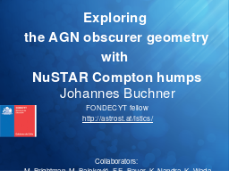 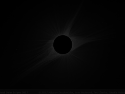 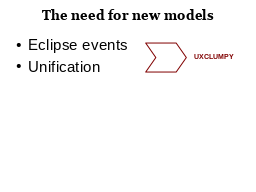 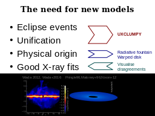 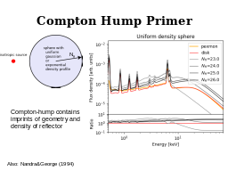 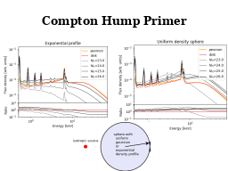 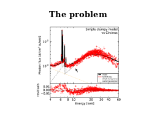 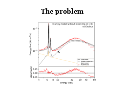 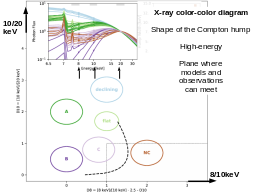 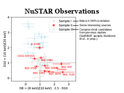 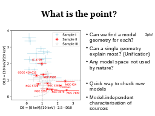 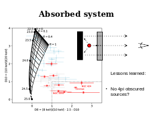 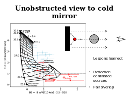 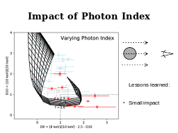 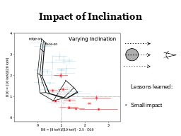 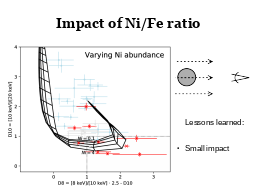 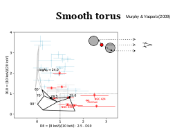 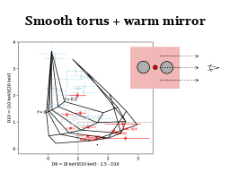 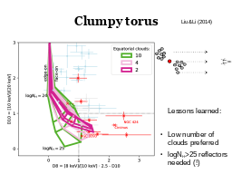 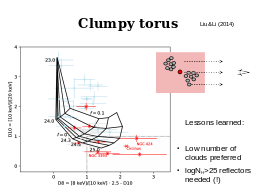 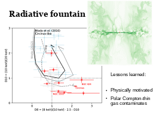 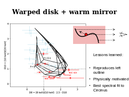 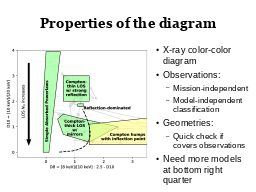 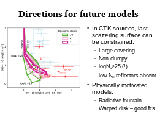 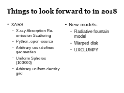 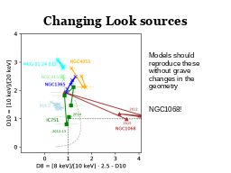 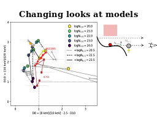 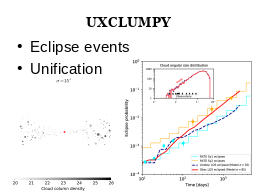 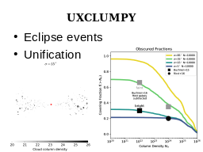 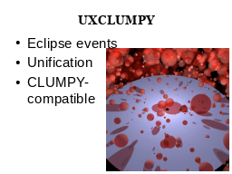 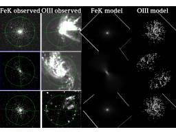 |